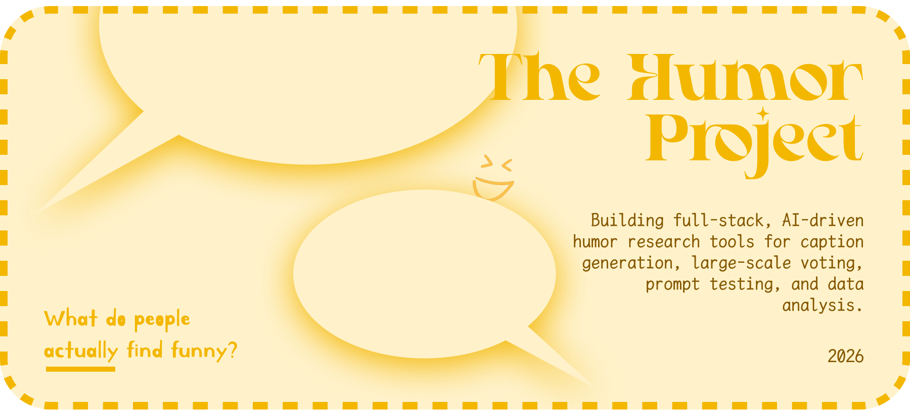

View projects in game design, data visualization, mobile applications, & more

Research for
Columbia University's
COMS-E6901:
The Humor Project
Jan - May 2026
Kiley Matschke
NextJS
TailwindCSS
Gemini CLI
Supabase
Vercel
GitHub
IntelliJ IDEA
View the full documentation for:
The Humor Project is a Columbia University research and development course. The research explores: what do people actually find funny, and can AI learn to generate humor in ways that resonate with human audiences? Each week, new “humor flavors” (different prompt and caption-generation strategies) are tested through public voting studies, creating datasets that support ongoing research into humor and human-AI interaction.
In this course, I developed a suite of full-stack applications to study how people respond to AI-generated humor. The work consisted of three connected applications: a public-facing voting platform where users rated AI-generated captions, an analytics dashboard for viewing and interpreting study data, and a prompt experimentation environment for testing and refining caption-generation pipelines. Through this process, I gained substantial experience building data-driven products and using AI as a collaborative development partner.